Sequence Plots
Mohammed Saqr
University of Eastern FinlandSonsoles López-Pernas
University of Eastern FinlandKamila Misiejuk
FernUniversität in Hagen, GermanySource:
vignettes/sequence-plots.Rmd
sequence-plots.RmdA transition network summarises sequences in one matrix and, in doing
so, leaves out who was in which state and when. Sequence plots keep
every sequence visible (Gabadinho et al. 2011; Saqr, López-Pernas,
Helske, et al. 2024). They show whether the transitions of a network
come from most sequences or from a few, whether states cluster in time,
and where sequences end. In Nestimate (Saqr, López-Pernas & Misiejuk
2026), sequence_plot() draws three kinds of sequence plot,
selected with type:
type |
What it shows |
|---|---|
"heatmap" (default) |
one row per sequence, sorted by similarity, with a dendrogram |
"index" |
one row per sequence, in panels by group |
"distribution" |
the share of each state at each position |
The same three views read sequences of different lengths from an event log, divide each actor’s actions into periods such as days, and draw several channels at once for states grouped into clusters.
Data
trajectories records the engagement state of 138
students in each of the 15 successive courses of a program, coded with
the three engagement states of Saqr and López-Pernas (2021):
Active, Average and Disengaged.
Saqr and López-Pernas (2021) and Saqr, López-Pernas, Jovanović and
Gašević (2023) followed such engagement trajectories across the courses
of a full program. The data have one row per student and one column per
course; a missing value occurs only as a run at the end of a row and
marks the point at which a student left the program.
library(Nestimate)
#> Registered S3 methods overwritten by 'Nestimate':
#> method from
#> plot.net_mlvar idiographic
#> print.net_mlvar idiographic
#> summary.net_mlvar idiographic
head(trajectories)
#> 1 2 3 4 5 6
#> [1,] "Active" "Disengaged" "Disengaged" "Disengaged" "Active" "Active"
#> [2,] "Average" "Average" "Average" "Average" "Average" "Average"
#> [3,] "Average" "Active" "Active" "Active" "Active" "Active"
#> [4,] "Active" "Active" "Active" "Active" "Active" "Average"
#> [5,] "Active" "Active" "Active" "Average" "Active" "Average"
#> [6,] "Average" "Average" "Disengaged" "Average" "Disengaged" "Disengaged"
#> 7 8 9 10 11 12
#> [1,] "Active" "Active" "Average" "Active" "Average" "Active"
#> [2,] "Average" "Average" "Average" "Active" "Average" "Average"
#> [3,] "Active" "Active" "Active" "Average" "Active" "Active"
#> [4,] "Average" "Active" "Active" "Active" "Average" "Active"
#> [5,] "Active" "Active" "Active" "Disengaged" "Active" "Active"
#> [6,] "Average" "Average" "Average" "Disengaged" "Average" "Disengaged"
#> 13 14 15
#> [1,] NA NA NA
#> [2,] "Average" "Average" "Average"
#> [3,] "Active" "Active" "Active"
#> [4,] "Average" "Active" "Average"
#> [5,] "Active" "Average" "Average"
#> [6,] "Average" "Average" "Average"Sequences sorted by similarity
A sequence index plot draws each sequence as a row of cells, one cell
per position, coloured by state. With type = "heatmap", the
default, the rows are sorted so that similar sequences are next to each
other. The dissimilarity between two sequences is computed with a
sequence distance (Studer & Ritschard 2016), by default the longest
common subsequence (sort = "lcs"), and the sequences are
ordered by a hierarchical clustering with Ward’s criterion (Ward 1963),
as implemented in ward.D2 (Murtagh & Legendre 2014).
The dendrogram on the left shows the clustering.
sequence_plot(trajectories)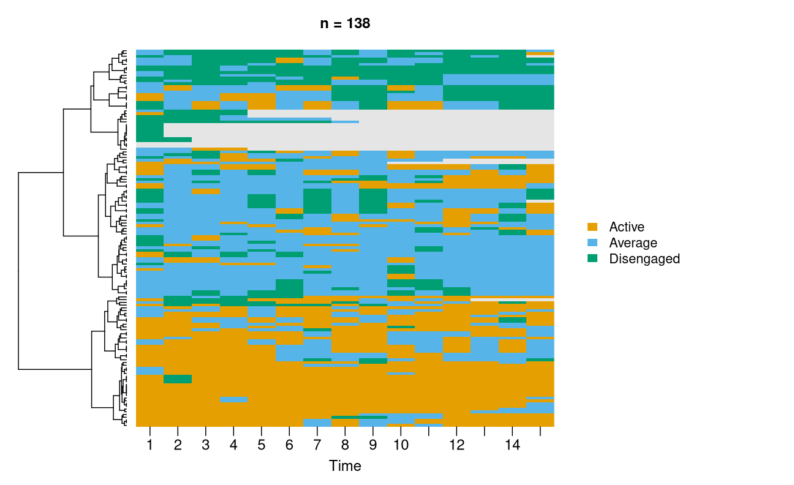
Each row is one student and each column one course; grey cells are the courses after a student left. Three bands are visible. A small band at the top holds students who are mostly disengaged and leave the program early. A large band in the middle holds students who are mostly average, with spells of disengagement. A band at the bottom holds students who are mostly active.
sort selects the distance or the order.
sort = "hamming" counts the positions in which two
sequences differ (Hamming 1950), and the other distances of
build_clusters() are available (osa,
lv, dl, qgram,
cosine, jaccard, jw).
sort = "frequency", "start" and
"end" order the rows without a dendrogram: by how common
the sequence is, or by its first or last state.
sequence_plot(trajectories, sort = "start")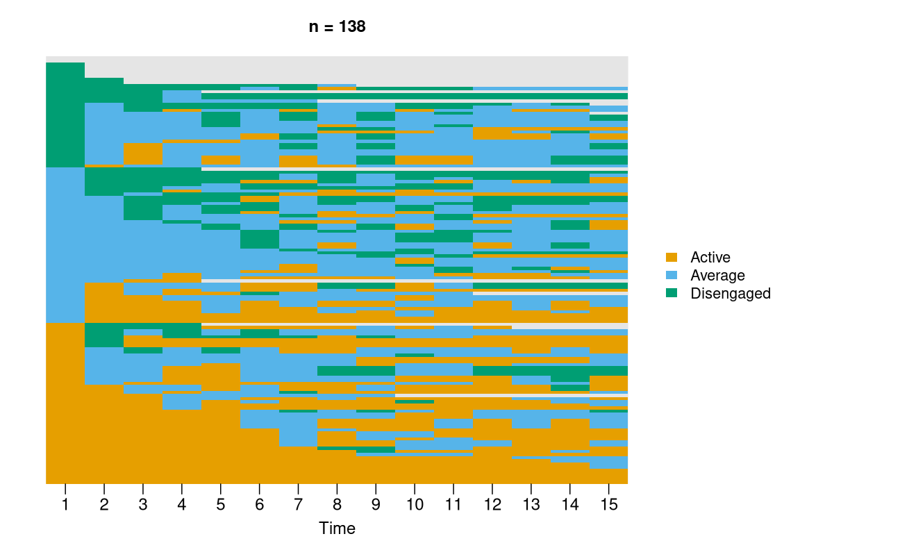
Sorted by the first state, the plot shows how the students who start in each state continue: many students who start active remain active for the first few courses, and many students who start disengaged move to the average state within one or two courses, while some leave.
k cuts the dendrogram into k groups and
draws a line between them.
sequence_plot(trajectories, k = 3)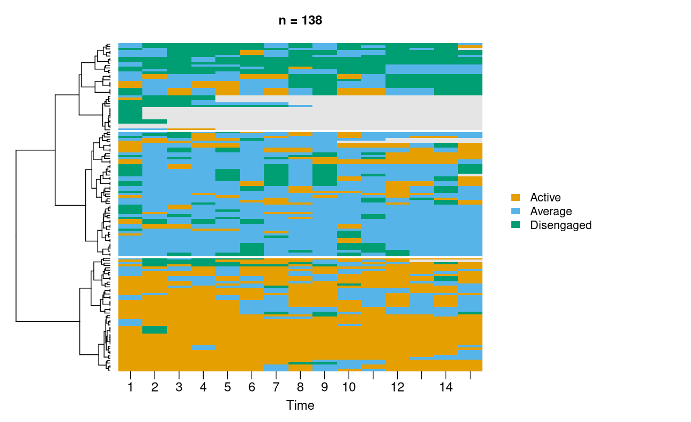
Sequences by group
When the sequences belong to known groups (clusters, conditions,
cohorts), type = "index" draws one panel per group, so the
groups are compared side by side. build_clusters() groups
the sequences, here by the Hamming distance and Ward’s criterion into
three clusters, and sequence_plot() reads the clustering
directly.
clusters <- build_clusters(trajectories, k = 3,
dissimilarity = "hamming", method = "ward.D2")
clusters
#> Sequence Clustering [ward.D2]
#> Sequences: 138 | Clusters: 3
#> Dissimilarity: hamming
#> Quality: silhouette = 0.364
#>
#> Cluster N Mean within-dist
#> 1 18 (13.0%) 5.333
#> 2 72 (52.2%) 8.521
#> 3 48 (34.8%) 5.776The three clusters hold 18, 72 and 48 students, with an average silhouette of 0.36, a moderate separation.
sequence_plot(clusters, type = "index", ncol = 3, nrow = 1)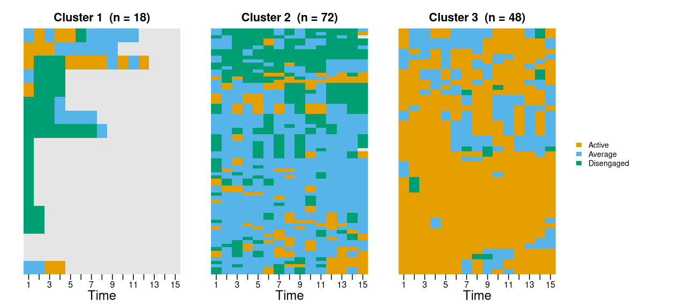
Cluster 1 holds the students who are mostly disengaged and leave the program after a few courses. Cluster 2 holds students who are mostly average, with frequent spells of disengagement. Cluster 3 holds students who are mostly active throughout the program.
The distribution of states over time
type = "distribution" draws the share of each state at
each position as a stacked area. It shows when states are common, which
a transition network pooled over time does not.
sequence_plot(trajectories, type = "distribution")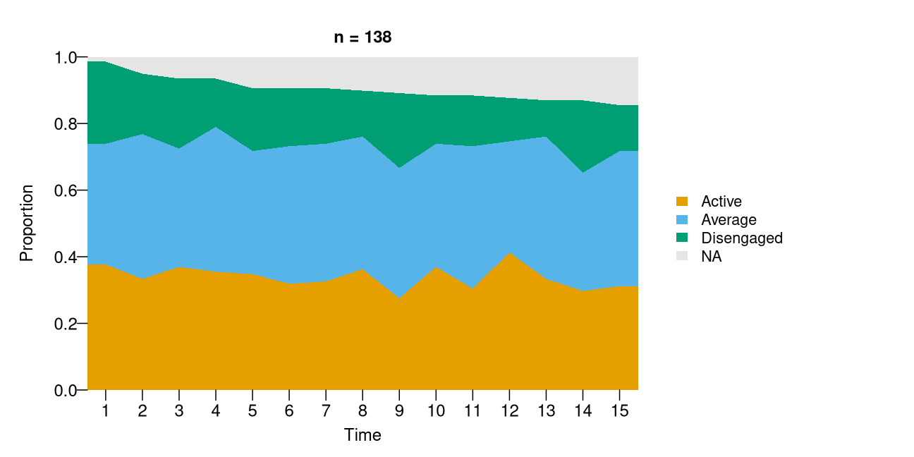
With na = TRUE, the default, the grey band is the share
of students who have left, and it grows in the later courses. With
na = FALSE, the shares are taken among the students who
remain.
sequence_plot(trajectories, type = "distribution", na = FALSE)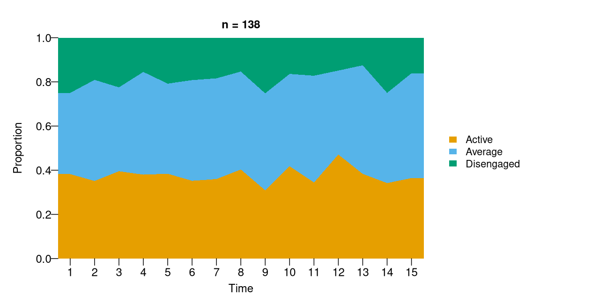
Among the students who remain, the shares of the three states are
similar in every course: about a third to a half are active, about two
fifths average, and the rest disengaged. geom = "bar" draws
bars instead of an area, and scale = "count" draws counts
instead of shares.
sequence_plot(clusters, type = "distribution", ncol = 3, nrow = 1)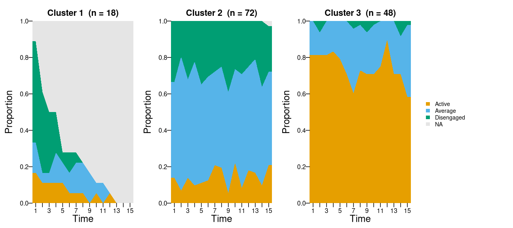
By cluster, the distribution plot shows the composition of each cluster over the program. Most students of cluster 1 have left by the fifth course. Cluster 2 is mostly average throughout, with roughly a fifth to a third of its students disengaged in each course, and in cluster 3 the share of active students stays between about 0.6 and 0.9.
Sequences of different lengths
An event log holds sequences of different lengths.
sequence_plot() reads it with actor (whose
actions form one sequence), action and time,
as build_network() does. human_long holds the
coded human turns of 429 human-AI pair-programming (“vibe coding”)
sessions (Saqr, Misiejuk & López-Pernas 2026; Misiejuk et al. 2026);
each session is one sequence of the three clusters of codes,
Directive, Evaluative and
Metacognitive. A few long sessions would stretch the time
axis, so trim = 0.9 keeps the positions that hold 90% of
the actions.
sequence_plot(human_long, actor = "session_id", action = "cluster",
time = "order_in_session", trim = 0.9)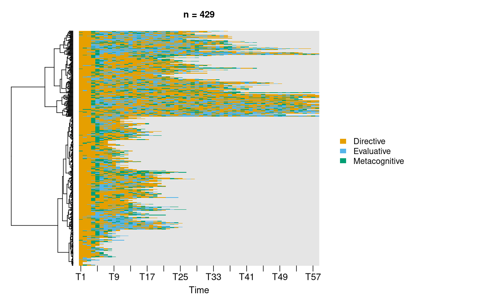
The sorted rows separate a group of long sessions from many short ones, and grey cells mark the positions after a session ended. Almost every session opens with a directive.
Periods
Learning activity can be examined at several time scales, and
patterns that are invisible in one long sequence appear when the
activity is organised by day, week or course (Saqr, Nouri & Fors
2019). Sequence analysis treats such data as sequences of states and
plots them period by period (Saqr, López-Pernas, Helske, et al. 2024).
When the actors do different numbers of actions in each period, however,
a column of a sequence index plot no longer refers to one point in time.
daily_actions records seven days of learning actions by 30
students: plan, read, write,
discuss and review. A student acts between 1
and 41 times on one day (median 9), and a student’s busiest day has
between 2 and 31 times as many actions as the quietest.
head(daily_actions)
#> student day action
#> 1 s01 day 1 review
#> 2 s01 day 1 review
#> 3 s01 day 1 write
#> 4 s01 day 1 write
#> 5 s01 day 1 discuss
#> 6 s01 day 1 writeDrawn on one time axis, each student’s week is one sequence, with the t-th action in column t.
sequence_plot(daily_actions, actor = "student", action = "action",
type = "index")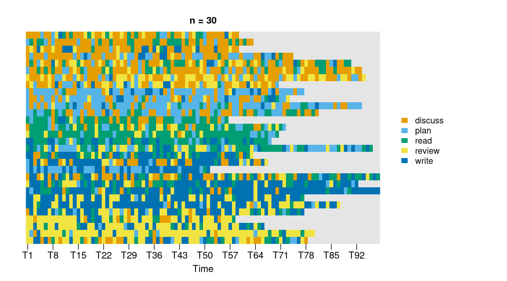
Students did between 12 and 59 actions on days 1 to 3, so day 4 begins anywhere from column 13 to column 60. A column mixes days, and the horizontal axis says nothing about when an action happened.
periods = "day" divides the axis into seven blocks of
equal width, one per day, with one row per student.
sequence_plot(daily_actions, actor = "student", action = "action",
periods = "day")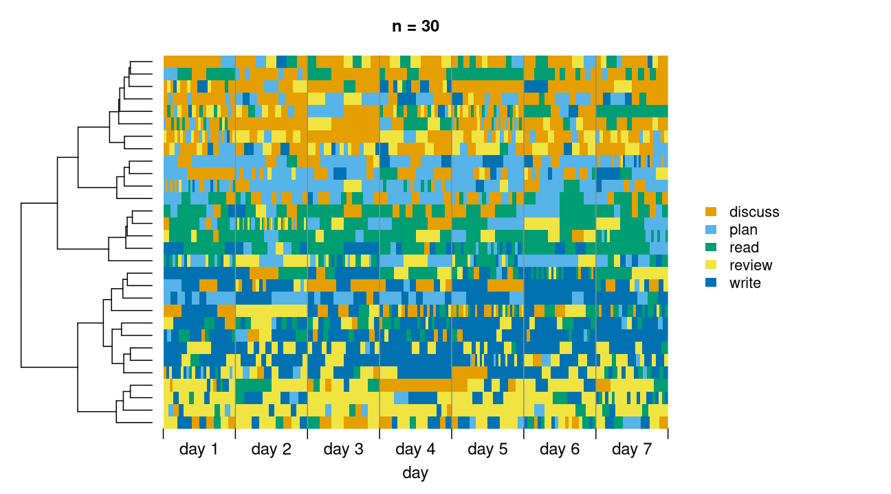
With fill = "stretch", the default, a student’s actions
on one day fill that day’s block in equal shares: one action fills it,
three take a third each, so the cells of a quiet day are wide and those
of a busy day narrow. With the days aligned, each row reads as one
student’s week. Most rows are dominated by one or two colours in every
block: a student’s most frequent action accounts for 32% to 78% of their
actions, and that preference holds from day to day. The students differ
more from each other than a student’s days differ from one another.
Stretching gives every day the same width whatever its volume, so the
figure shows what a student did each day, not how much.
Consecutive actions in the same state merge into one bar; 39% of
consecutive actions here repeat the previous one.
cell_border = "white" outlines every action, so each action
is visible as its own share of the day.
sequence_plot(daily_actions, actor = "student", action = "action",
periods = "day", type = "index", row_gap = 0.15,
cell_border = "white")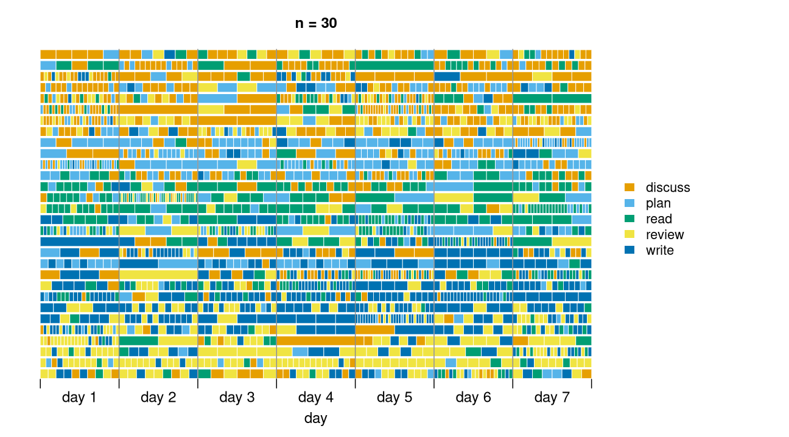
fill = "pad" gives every block as many slots as the
busiest student-day, 41 here, and leaves the unused slots white. A slot
is then the same position in the day for every student: the fifth slot
is the fifth action of that day.
sequence_plot(daily_actions, actor = "student", action = "action",
periods = "day", type = "index", row_gap = 0.15,
fill = "pad")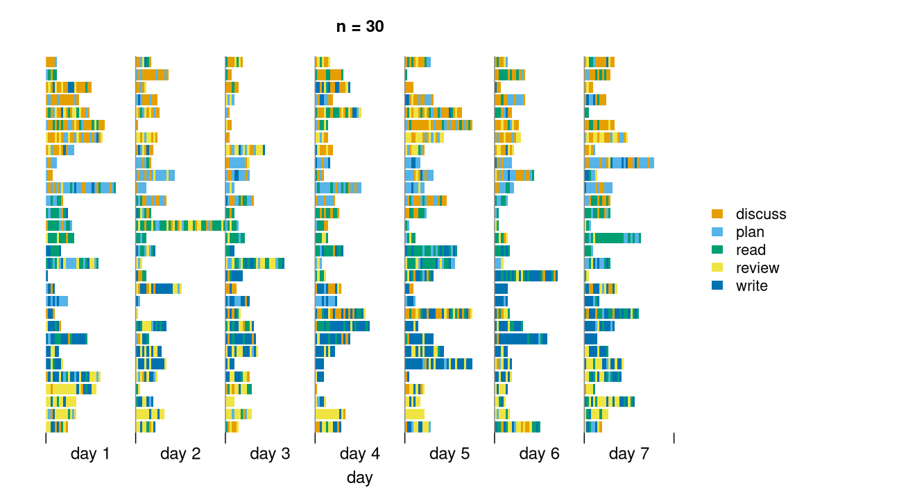
The padded plot shows the volume that stretching hides. With a median of 9 actions per day against 41 slots, most blocks are largely white, and the few long bars mark the busiest student-days. Padding shows how much each student did per day; stretching shows what it consisted of.
The rows are ordered by clustering each student’s whole week, all
days joined in order, with the longest-common-subsequence distance, and
k cuts the dendrogram into groups.
sequence_plot(daily_actions, actor = "student", action = "action",
periods = "day", k = 3, k_color = "black")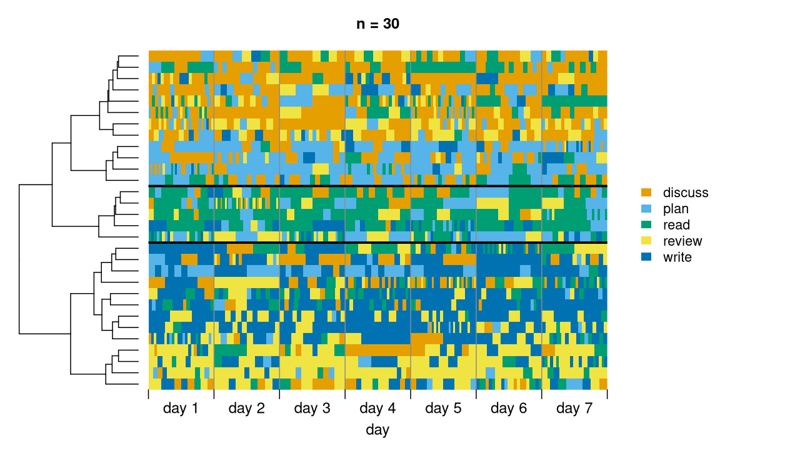
The three groups follow the students’ preferred actions: the students at the top mostly discuss and plan, a small group in the middle mostly reads, and the students at the bottom mostly write and review.
A network built with session = "day" holds one sequence
per student and day, and
sequence_plot(net, periods = "day") draws the same figure
from the network.
daily_net <- build_network(daily_actions, method = "relative",
actor = "student", action = "action",
session = "day")
sequence_plot(daily_net, periods = "day")
For dates, period_unit = "week" or "month"
groups a date column into weeks or months, one block each.
Several channels
When the states are grouped into clusters, build_mcml()
estimates a network of the clusters and of the states within each
cluster, and sequence_plot() draws its sequences as several
channels: a Summary channel coloured by cluster and one
channel per cluster coloured by that cluster’s states, with the time
spent in other clusters faded. The example groups the nine regulation
actions of group_regulation_long, which is synthetically
generated from the group_regulation data of the tna package
(Tikka, López-Pernas & Saqr 2025), into three clusters.
fit <- build_mcml(
group_regulation_long,
clusters = list(Cognitive = c("discuss", "synthesis", "consensus",
"cohesion"),
Regulation = c("plan", "monitor", "adapt", "coregulate"),
Affective = "emotion"),
actor = "Actor", action = "Action", time = "Time")
sequence_plot(fit, type = "distribution")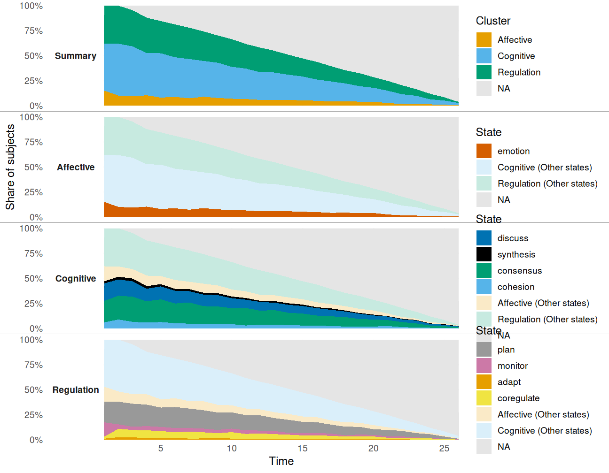
The Summary channel shows that cognitive actions take
the largest share at every position, followed by regulation and then
affective actions; the grey band grows as sequences end. Each cluster’s
channel shows which of its states carry that share. combine
merges clusters into one channel, expand shows the states
of a cluster in the Summary channel, and
rest = "none" leaves out the other clusters.
Appearance
The legend position and title, the colours of the states, cell borders, the spacing of the axis ticks and an outer frame are set with arguments.
sequence_plot(trajectories, k = 3,
state_colors = c("#009E73", "#E69F00", "#D55E00"),
legend = "bottom", legend_title = "Engagement",
cell_border = "grey70", tick = 3,
main = "Student engagement trajectories")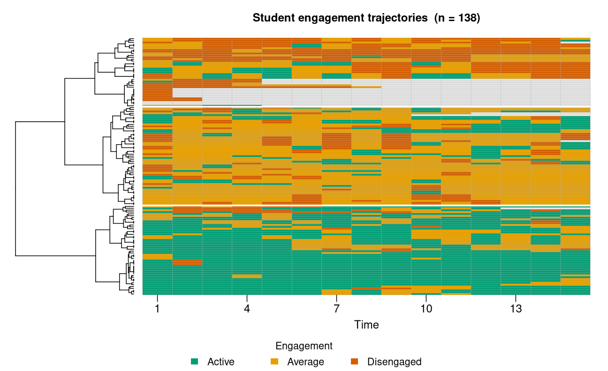
Colours
The states are drawn in the Okabe-Ito colours, dealt in the
alphabetical order of the states, so a state has the same colour in
every figure. set_state_colors() sets other colours once,
on the network; every object computed from it (clusters, groups,
bootstraps, permutation tests, landscapes) and every figure of them,
cograph::splot() included, uses them.
state_colors() lists the colours in use.
engagement <- build_network(trajectories, method = "relative")
engagement <- set_state_colors(engagement, c(Active = "#009E73",
Average = "#56B4E9",
Disengaged = "#D55E00"))
state_colors(engagement)
#> state color source
#> 1 Active #009E73 set
#> 2 Average #56B4E9 set
#> 3 Disengaged #D55E00 set
sequence_plot(engagement, k = 3)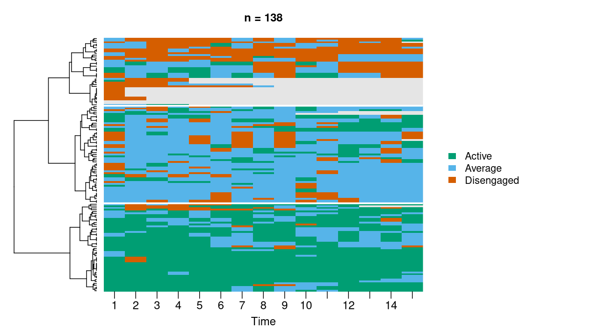
state_colors = in a single call, as in the previous
section, changes that figure only.
How to cite this article
Saqr, M., López-Pernas, S., & Misiejuk, K. (2026). Sequence plots. Nestimate. HTML · PDF
References
Gabadinho, A., Ritschard, G., Müller, N. S., & Studer, M. (2011). Analyzing and visualizing state sequences in R with TraMineR. Journal of Statistical Software, 40(4). https://doi.org/10.18637/jss.v040.i04
Hamming, R. W. (1950). Error detecting and error correcting codes. Bell System Technical Journal, 29(2), 147–160. https://doi.org/10.1002/j.1538-7305.1950.tb00463.x
Misiejuk, K., López-Pernas, S., Oliveira, E., Rinja, D., & Saqr, M. (2026). It takes two to vibe code: Profiling student-AI programming interactions processes and their high order structure. In Proceedings of the 26th Koli Calling International Conference on Computing Education Research (pp. 1–11). ACM. https://doi.org/10.1145/3856208.3856254
Murtagh, F., & Legendre, P. (2014). Ward’s hierarchical agglomerative clustering method: Which algorithms implement Ward’s criterion? Journal of Classification, 31(3), 274–295. https://doi.org/10.1007/s00357-014-9161-z
Saqr, M., & López-Pernas, S. (2021). The longitudinal trajectories of online engagement over a full program. Computers & Education, 175, 104325. https://doi.org/10.1016/j.compedu.2021.104325
Saqr, M., López-Pernas, S., & Misiejuk, K. (2026). Nestimate: An R package for dynamic, probabilistic, and high order network analysis. Applied Psychological Measurement. https://doi.org/10.1177/01466216261472019
Saqr, M., López-Pernas, S., Helske, S., Durand, M., Murphy, K., Studer, M., & Ritschard, G. (2024). Sequence analysis in education: Principles, technique, and tutorial with R. In M. Saqr & S. López-Pernas (Eds.), Learning analytics methods and tutorials: A practical guide using R (pp. 321–354). Springer. https://doi.org/10.1007/978-3-031-54464-4_10
Saqr, M., López-Pernas, S., Jovanović, J., & Gašević, D. (2023). Intense, turbulent, or wallowing in the mire: A longitudinal study of cross-course online tactics, strategies, and trajectories. The Internet and Higher Education, 57, 100902. https://doi.org/10.1016/j.iheduc.2022.100902
Saqr, M., Misiejuk, K., & López-Pernas, S. (2026). Human-AI collaboration or obedient and often clueless AI in instruct, serve, repeat dynamics? The Internet and Higher Education, 70, 101087. https://doi.org/10.1016/j.iheduc.2026.101087
Saqr, M., Nouri, J., & Fors, U. (2019). Time to focus on the temporal dimension of learning: A learning analytics study of the temporal patterns of students’ interactions and self-regulation. International Journal of Technology Enhanced Learning, 11(4), 398–412. https://doi.org/10.1504/IJTEL.2019.102549
Studer, M., & Ritschard, G. (2016). What matters in differences between life trajectories: A comparative review of sequence dissimilarity measures. Journal of the Royal Statistical Society: Series A (Statistics in Society), 179(2), 481–511. https://doi.org/10.1111/rssa.12125
Tikka, S., López-Pernas, S., & Saqr, M. (2025). tna: An R package for transition network analysis. Applied Psychological Measurement, 49(6), 326–328. https://doi.org/10.1177/01466216251348840
Ward, J. H. (1963). Hierarchical grouping to optimize an objective function. Journal of the American Statistical Association, 58(301), 236–244. https://doi.org/10.1080/01621459.1963.10500845